Last updated: 2024-06-04
Checks: 7 0
Knit directory: OriolGEM.github.io/
This reproducible R Markdown analysis was created with workflowr (version 1.7.1). The Checks tab describes the reproducibility checks that were applied when the results were created. The Past versions tab lists the development history.
Great! Since the R Markdown file has been committed to the Git repository, you know the exact version of the code that produced these results.
Great job! The global environment was empty. Objects defined in the global environment can affect the analysis in your R Markdown file in unknown ways. For reproduciblity it’s best to always run the code in an empty environment.
The command set.seed(20240321) was run prior to running
the code in the R Markdown file. Setting a seed ensures that any results
that rely on randomness, e.g. subsampling or permutations, are
reproducible.
Great job! Recording the operating system, R version, and package versions is critical for reproducibility.
Nice! There were no cached chunks for this analysis, so you can be confident that you successfully produced the results during this run.
Great job! Using relative paths to the files within your workflowr project makes it easier to run your code on other machines.
Great! You are using Git for version control. Tracking code development and connecting the code version to the results is critical for reproducibility.
The results in this page were generated with repository version 64c7378. See the Past versions tab to see a history of the changes made to the R Markdown and HTML files.
Note that you need to be careful to ensure that all relevant files for
the analysis have been committed to Git prior to generating the results
(you can use wflow_publish or
wflow_git_commit). workflowr only checks the R Markdown
file, but you know if there are other scripts or data files that it
depends on. Below is the status of the Git repository when the results
were generated:
Ignored files:
Ignored: .Rhistory
Ignored: .Rproj.user/
Ignored: code/.RData
Ignored: code/.Rhistory
Ignored: data/
Note that any generated files, e.g. HTML, png, CSS, etc., are not included in this status report because it is ok for generated content to have uncommitted changes.
These are the previous versions of the repository in which changes were
made to the R Markdown
(analysis/100_global_description.Rmd) and HTML
(docs/100_global_description.html) files. If you’ve
configured a remote Git repository (see ?wflow_git_remote),
click on the hyperlinks in the table below to view the files as they
were in that past version.
| File | Version | Author | Date | Message |
|---|---|---|---|---|
| Rmd | 2a85fa7 | OriolGEM | 2024-06-04 | updated images |
| html | 2a85fa7 | OriolGEM | 2024-06-04 | updated images |
| Rmd | e36d2e8 | OriolGEM | 2024-06-03 | update |
| html | e36d2e8 | OriolGEM | 2024-06-03 | update |
We are interested in a general description of the dataset in terms of microbiome composition and function. We are using all available samples (481) from all patients (118). The dataset is contains vaginal microbiome data extracted 2 weeks after administering the vaccine regimen at the corresponding study time-points, following the RV306 trial:
## mre init & filter
bucket <- "s3://cihr-hiv-rv306/vaginal/metagenome/WMGS"
out_dir <- here::here("data/preprocessed/")
dir.create(out_dir, showWarnings = FALSE, recursive = TRUE)
mre <- metar::metarExperiment_aws(bucket = bucket, wd = out_dir)
# Create new dataframe with the variable to add
df <- mre@metadata@metadata_df
new_df <- df %>%
dplyr::select(SampleID, Treatment_group) %>%
dplyr::mutate(
Treatment_group_1 = dplyr::case_when(
Treatment_group %in% "t_4" ~ "t_4A",
Treatment_group %in% "t_no_boost" ~ "t_4A",
TRUE ~ as.character (Treatment_group)
)
) %>%
dplyr::select(SampleID, Treatment_group_1)
# Add the new var to the mre
mre <- metar::add_metadata_var(mre, new_df, id_col = "SampleID")
# Add the new var as categorical var
mre <- metar::add_cat(mre, "Treatment_group_1", "Set1")
mre <-
metar::get_meta(mre) %>%
dplyr::pull(SampleID) %>%
metar::filter_samples(mre, sample_ids = .)
mre#> MetarSet-class experimental-level object
#> [MetadataSet ]: 481 samples and 7 variables
#> [DiversitySet ]:
#> ✖ igc: 0 observations and 0 samples
#> ✔ virgo: 14765 observations and 481 samples
#> ✖ dada2: 0 observations and 0 samples
#> [TaxaSet ]:
#> ✖ metaphlan: no phyloseq object available
#> ✖ kraken: no phyloseq object available
#> ✖ bracken: no phyloseq object available
#> ✖ motus: no phyloseq object available
#> ✔ virgo: phyloseq object with 258 taxa and 481 samples
#> ✖ dada2: no phyloseq object available
#> [GeneFunctionSet ]:
#> ✖ humann: no functional data aviable
#> ✖ igc: no functional data aviable
#> ✔ virgo: 4621 kegg_id, 0 cog_id, 0 eggnog_id, 0 ec_id and 0 metacyc_id
#> ✖ fmap: no functional data aviable
#> ✖ picrust2: no functional data aviable
#> ✖ tax4fun: no functional data aviable
#> ✖ phylolisft: no functional data aviableWe will perform a brief QC as we have already performed it.
## def vars
bucket <- "s3://cihr-hiv-rv306"
filt_data_obj <- "vaginal/metagenome/WMGS/RawData/DataFiltering_Boxplot.rds"
## load seq analysis data
df <-
aws.s3::s3readRDS(filt_data_obj, bucket) %>%
.[[1]] %>% ## Get data tibble from ggplot2 object
tibble::as_tibble() %>%
dplyr::filter(SampleID %in% metar::get_meta(mre)$SampleID)
## Plot absolute
df %>%
ggplot(aes(SampleID, value, fill = Step)) +
geom_bar(position = "stack", stat = "identity", alpha = 0.8, colour = 0.0, width = 0.8) +
scale_fill_brewer(palette = "Set1") +
theme_minimal() +
theme(axis.text.x = element_blank())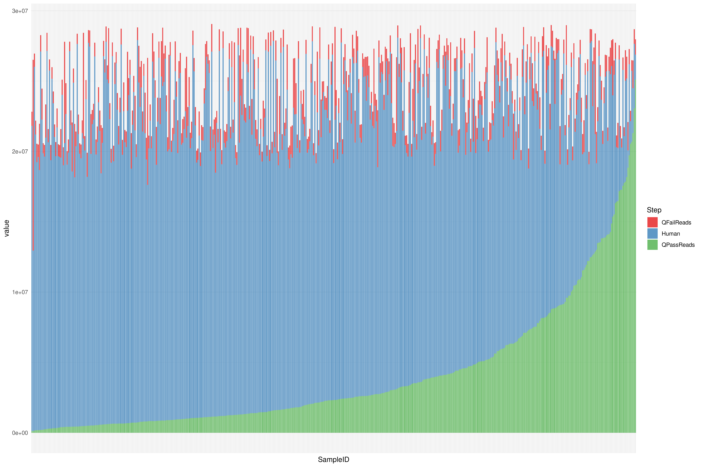
| Version | Author | Date |
|---|---|---|
| e36d2e8 | OriolGEM | 2024-06-03 |
Here we can see the total number of pair-ended reads (PE reads) of each sample separated by QFail reads, QPass reads and Human reads. Samples appear ordered depending on the amount of Qpass reads. Thus, here we cannot only see the amount of QPass reads of each sample but also the sampling depth of each sample.
## Plot relative
df %>%
ggplot(aes(SampleID, value, fill = Step)) +
geom_bar(position = "fill", stat = "identity", alpha = 0.8, colour = 0.0) +
scale_fill_brewer(palette = "Set1") +
theme_minimal() +
theme(axis.text.x = element_blank())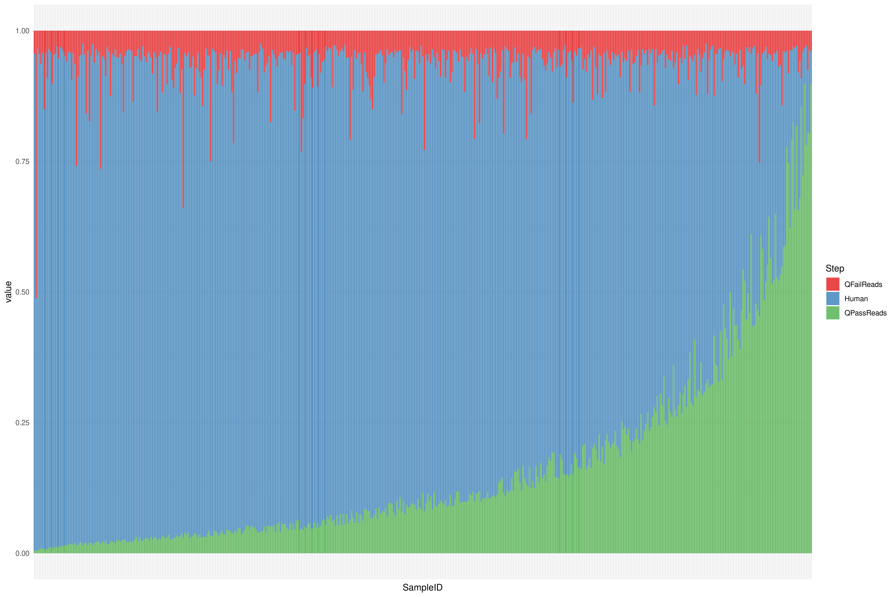
| Version | Author | Date |
|---|---|---|
| e36d2e8 | OriolGEM | 2024-06-03 |
Here we can see the relative number of pair-ended reads (PE reads) of each sample separated by QFail reads, QPass reads and Human reads. Samples appear ordered depending on the total amount of Qpass reads. As it is relativized, we are not able to see sample depth but we can compare the percentage of QPass reads from the total amount on reads between all samples.
We will also add a categorical variable where we distribute the QPass reads in quantiles, as usually a higher number of QPass reads means higher diversity observed, but we want to check if it is be the case.
## Add new metadata var
mre <-
dplyr::filter(df, Step == "QPassReads") %>%
dplyr::mutate(
pass_reads_quantile = findInterval(value, quantile(value)),
pass_reads_quantile = dplyr::case_when(
pass_reads_quantile == 5 ~ "c_4",
TRUE ~ stringr::str_c("c_", pass_reads_quantile)
)
) %>%
dplyr::select(SampleID, pass_reads_quantile) %>%
metar::add_metadata_var(mre, .) %>%
metar::add_cat("pass_reads_quantile", "Pastel2")Note that diversity analysis here are delicate to perform due to the limitations in sampling.
From the taxonomic composition we’ll derive some alpha-diversity ecological indices and compare them among groups.
We also want to use the VIRGO catalog mapping-derived gene richness. However, this can be problematic for gene richness since the initial reads per sample is very low in some cases. This low numbers may be enough to describe the taxonomic composition, specially if the microbiome is “simple”, but may fail to capture richness/diversity.
## run rarefaction
mre <- metar::virgo_rarefaction(mre, save_files = FALSE)
metar::get_cat(mre) %>%
dplyr::pull(1) %>%
.[-1] %>% # Remove "Treatment_group"
purrr::walk(~ {
cat('\n\n### `', .x, '`\n\n')
metar::get_diversity(mre, type = "virgo", res_slot = "rarefaction") %>%
purrr::pluck("categorical", .x, "rarefaction") %>%
plot()
})The rarefaction curve shows how far we are from assymptotically saturating richness signal from this catalog at the sampling depth we have (after filtering human sequences). Thus, we need to be aware of the limitations of gene richness analysis and interpret with caution. When comparing between variable groups, sampling depth seem to be no different between them, except, logically, for the variable Qpass reads quantile, where, depending on the quantile, they have more or less sample depth.
## plot gene richness
metar::get_cat(mre) %>%
dplyr::pull(1) %>%
.[-1] %>% # Remove "Treatment_group"
purrr::walk(~ {
cat('\n\n### `', .x, '`\n\n')
metar::get_diversity(mre, type = "virgo", res_slot = "rarefaction") %>%
purrr::pluck("categorical", .x, "boxplots", "GeneNumber") %>%
plot()
})The gene richness boxplots indicate that there are no significant differences between groups of variables in terms of gene richness, except when separating by treatment group, where the gene richness of t_2 is significantly higher compared to t_4A. There are also significant differences between gene richness when observing by Qpass reads quantiles, as a higher number of Qpass reads (higher sampling depth) usually leads to a higher gene richness.
To further explore the aforementioned observations, we will verify whether gene diversity varies across time-points for the categorical variables.
metar::get_cat(mre) %>%
dplyr::pull(1) %>%
.[-1] %>% # Remove "Treatment_group"
purrr::walk(~ {
cat('\n\n### `', .x, '`\n\n')
metar::get_diversity(mre, type = "virgo", res_slot = "rarefaction") %>%
purrr::pluck("longitudinal_rel", "categorical", .x) %>%
plot()
})In these graphs, we can see the changes in the relative gene richness over time of samples separated by categorical variable groups. It seems that while gene richness is stable on the active arm group over time, gene richness on the placebo group is more variable. Regarding the other variables, gene richness seems constant over time.
Let’s visualize composition at the species level using barplots.
## run barplots
mre <- metar::virgo_barplots(mre, top_n = 50, save_files = FALSE)
## Plot virgo barplots
mre %>%
metar::get_taxa("virgo", "barplots") %>%
purrr::pluck("ta1", "top_50", "rel_abundance", "bray_hclust_order_barplot")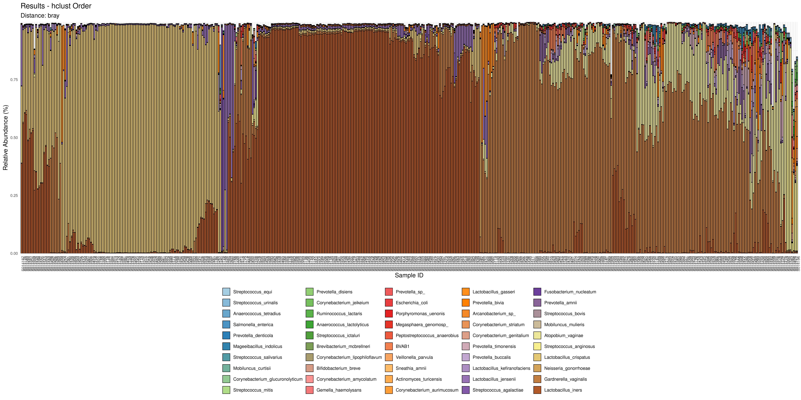
| Version | Author | Date |
|---|---|---|
| e36d2e8 | OriolGEM | 2024-06-03 |
The relative abundance barplots in hierarchical clustering order depicting taxonomic diversity per sample reveal the presence of three distinct groups:
## Count of two predominant taxas per sample
mre %>%
metar::get_taxa("virgo", "barplots") %>%
purrr::pluck("ta1", "top_50", "rel_abundance", "bray_hclust_order_barplot", "data") %>%
dplyr::group_by(SampleID) %>%
dplyr::slice_max(Abundance, n = 2) %>%
dplyr::ungroup() %>%
dplyr::count(Species, sort = TRUE)#> # A tibble: 23 × 2
#> Species n
#> <fct> <int>
#> 1 Gardnerella_vaginalis 246
#> 2 Lactobacillus_iners 238
#> 3 Lactobacillus_crispatus 192
#> 4 Atopobium_vaginae 120
#> 5 Lactobacillus_jensenii 79
#> 6 Lactobacillus_gasseri 16
#> 7 BVAB1 14
#> 8 Prevotella_bivia 13
#> 9 Prevotella_amnii 9
#> 10 Streptococcus_agalactiae 7
#> # ℹ 13 more rowsTo confirm these observations, we created a table where we counted the two most dominant species per each sample. It can be seen that the most abundant species are Gardnerella vaginalis, Lactobacillus iners and Lactobacillus crispatus, followed by Atopobium vaginae, which on the abundance barplot was found in codominance with Gardnerella vaginalis on some samples. The fourth and fifth more common species are also Lactobacillus.
In the previous barplots, the x-axis is defined according to ward.D2, bray-based clustering. We’ll now transform abundances and project them into a heatmap, to be able to visualize association with variables of interest.
mre <- metar::virgo_heatmap(mre, top_n = 50, save_files = FALSE)
mre %>%
metar::get_taxa("virgo", "heatmaps") %>%
purrr::pluck("ta1", "top_50") %>%
ComplexHeatmap::draw(heatmap_legend_side = "left", annotation_legend_side = "bottom")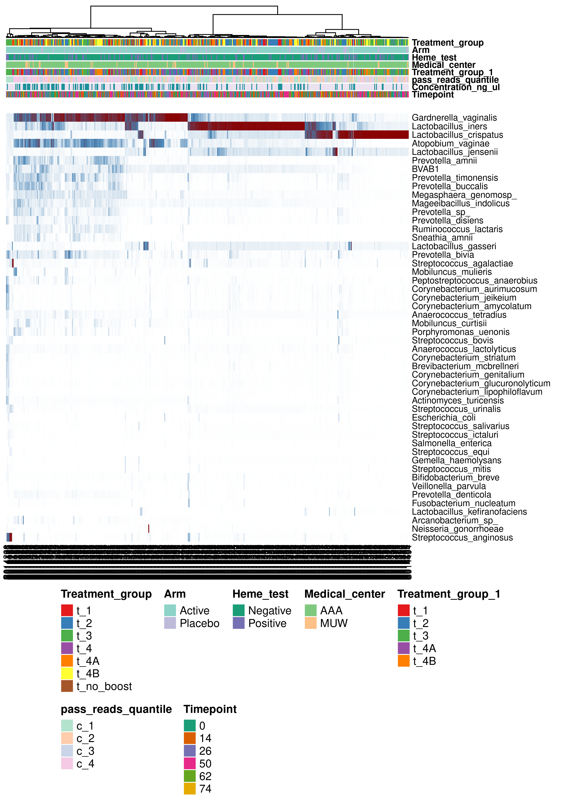
| Version | Author | Date |
|---|---|---|
| e36d2e8 | OriolGEM | 2024-06-03 |
In this heatmap with hierarchical clustering, we can clearly see the three groups, but there is no apparent association between composition and metadata variables. In some samples dominated by Gardnerella vaginalis, there is co-dominance with Atopobium vaginae present.
We have seen that the vaginal microbiome composition is quite discretized in many of the samples. That is, there is a single species which dominate in most of the samples, while the rest have a combination fo the rest of the species, with higher dominance indices (we can check that separately). So, the question is whether there are composition types (from now on, called vaginotypes) that we can detect.
For consistence with the rest of the analysis, we’ll perform the PAM (Partitioning Around Medoids) clustering analysis using all samples in order to broadly detect these vagintoypes and be able to uniquely assign each sample to a vaginotype, while ensuring that this assignment does not changes in downstream analysis.
The PAM algorithm searches for k representative objects in a data set (k medoids) and then assigns each object to the closest medoid in order to create clusters. Its aim is to minimize the sum of dissimilarities between the objects in a cluster and the center of the same cluster (medoid).
## run nmds
mre <- metar::virgo_nmds(mre, top_n = 50, save_files = FALSE)
## Silhouette plot
mre %>%
metar::get_taxa("virgo", "nmds") %>%
purrr::pluck("ta1", "top_50", "clustering_results", "silhouette_plt")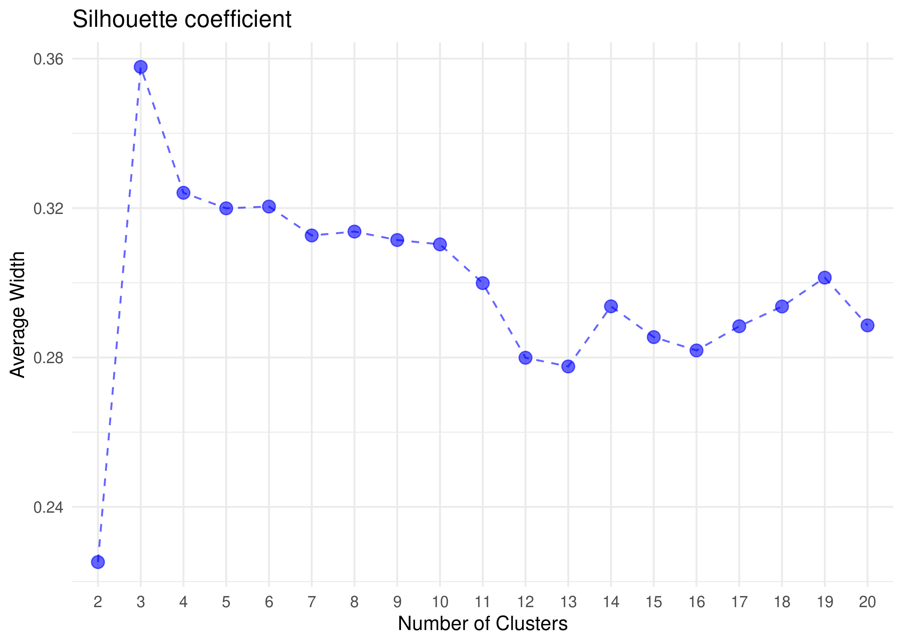
| Version | Author | Date |
|---|---|---|
| e36d2e8 | OriolGEM | 2024-06-03 |
The Silhouette plot shows that the silhouette coefficient is highest when k=3, suggesting that’s the optimal number of clusters. This may be pointing to 3 different vaginotypes in the entire sample set. Moreover, it agrees with what was observed in the barplot and the heatmap.
## Cluster summary
mre %>%
metar::get_taxa("virgo", "nmds") %>%
purrr::pluck("ta1", "top_50", "clustering_results", "sample_cluster_labels") %>%
dplyr::count(cluster)#> # A tibble: 3 × 2
#> cluster n
#> <int> <int>
#> 1 1 115
#> 2 2 177
#> 3 3 189This table shows us the number of samples that are classified into each of these 3 clusters.
Nevertheless, we are interested in the main characteristics of these vaginotypes, so we will use the cluster label to plot a heatmap and visualize main characteristics.
## Cluster nmds
mre %>%
metar::get_taxa("virgo", "nmds") %>%
purrr::pluck("ta1", "top_50", "categorical", "cluster")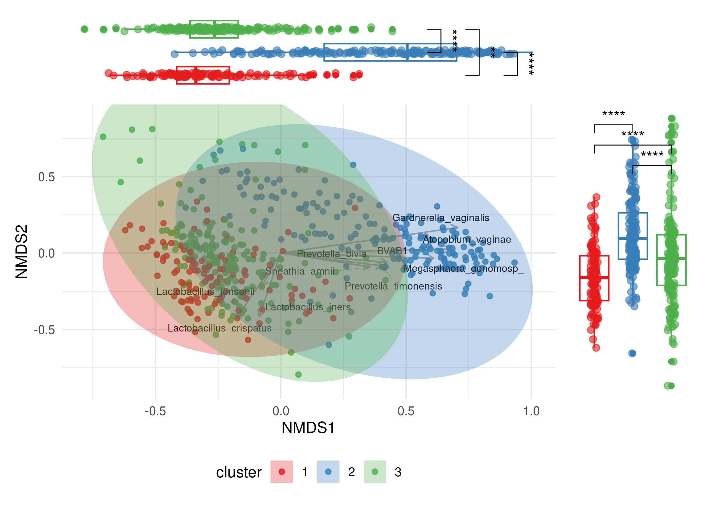
| Version | Author | Date |
|---|---|---|
| e36d2e8 | OriolGEM | 2024-06-03 |
Apparently:
Cluster 1: Is enriched with L. crispatus, although some samples in this group also show high levels of L. iners and other Lactobacillus.
Cluster 2: Is mainly G. vaginalis, occasionally accompanied by co-dominance with A. vaginae.
Cluster 3: Is dominated by L. iners.
We will first create a variable for these clusters, and we also added a categorical variable based on whether the vaginotype has pathological potential or not. We call the categorical variable vaginotype condition which includes the categories healty and vaginosis.
## Prepare var
vaginotypes <-
mre %>%
metar::get_taxa("virgo", "nmds") %>%
purrr::pluck("ta1", "top_50", "clustering_results", "sample_cluster_labels") %>%
dplyr::mutate(
vaginotype = dplyr::case_when(
cluster == 1 ~ "c1_L_crispatus",
cluster == 2 ~ "c2_G_vaginalis",
cluster == 3 ~ "c3_L_iners"
),
vaginotype_condition = dplyr::if_else(cluster == 2, "vaginosis", "no_vaginosis")
) %>%
dplyr::select(SampleID, vaginotype, vaginotype_condition)
## Update mre metadata
mre <-
metar::add_metadata_var(mre, vaginotypes) %>%
metar::add_cat(var = "vaginotype", palette = "Accent") %>%
metar::add_cat(var = "vaginotype_condition", palette = "Set1")
## Save mre with vaginotype metadata variable
readr::write_rds(mre, here::here("data", "preprocessed", "mre_vaginotype.rds"))If we take a closer look to clusters, in terms of Alpha Diversity:
## Run rarefaction for new var
mre <- metar::virgo_rarefaction(mre, save_files = FALSE)
metar::get_cat(mre) %>%
dplyr::pull(1) %>%
.[-1] %>% # Remove "Treatment_group"
purrr::walk(~ {
cat('\n\n### `', .x, '`\n\n')
metar::get_diversity(mre, type = "virgo", res_slot = "rarefaction") %>%
purrr::pluck("categorical", .x, "rarefaction") %>%
plot()
})The rarefaction curve shows that when adding the categorical variable vaginotype, the samples which are more rich in G. Vaginalis are closer to asymptotically saturating richness signal from this catalog, mainly because they tend to have a higher sampling depth.
## Plotting
metar::get_cat(mre) %>%
dplyr::pull(1) %>%
.[-1] %>% # Remove "Treatment_group"
purrr::walk(~ {
cat('\n\n### `', .x, '`\n\n')
metar::get_diversity(mre, type = "virgo", res_slot = "rarefaction") %>%
purrr::pluck("categorical", .x, "boxplots", "GeneNumber") %>%
plot()
})#>
#>
#> ### ` Arm `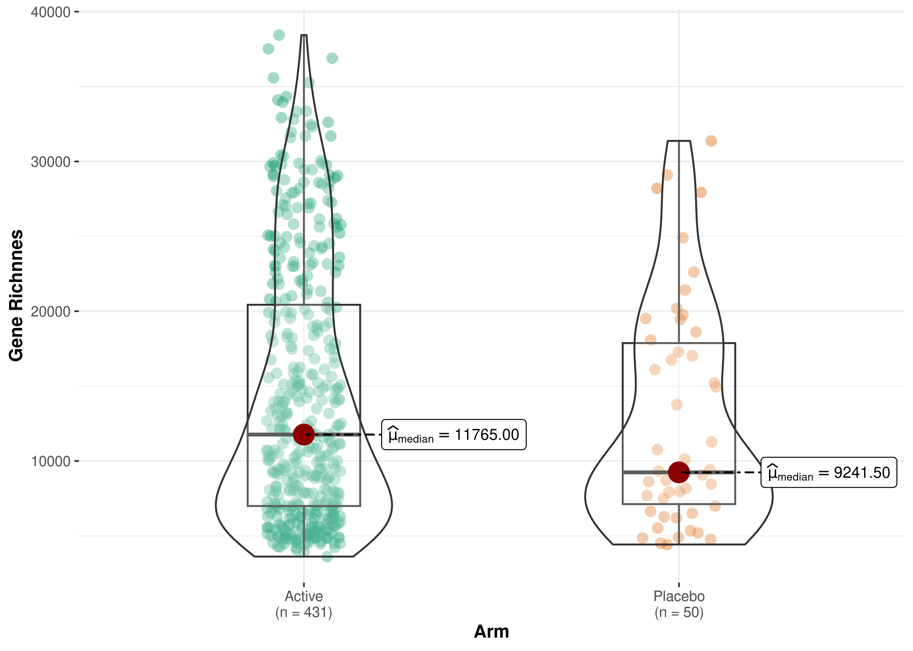
| Version | Author | Date |
|---|---|---|
| e36d2e8 | OriolGEM | 2024-06-03 |
#>
#>
#> ### ` Heme_test `
| Version | Author | Date |
|---|---|---|
| e36d2e8 | OriolGEM | 2024-06-03 |
#>
#>
#> ### ` Medical_center `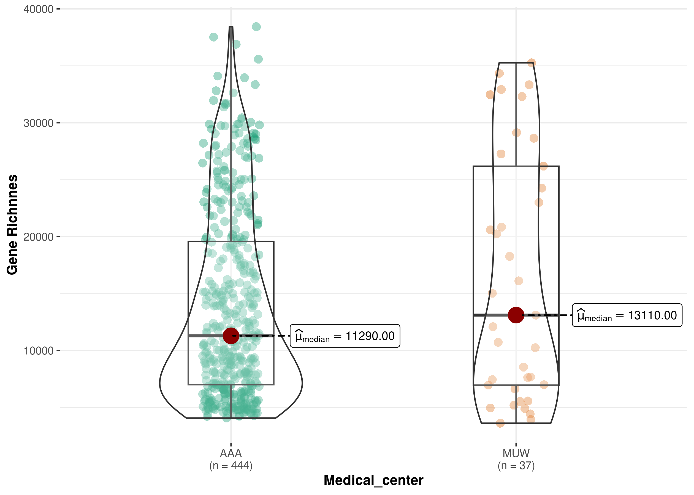
| Version | Author | Date |
|---|---|---|
| e36d2e8 | OriolGEM | 2024-06-03 |
#>
#>
#> ### ` Treatment_group_1 `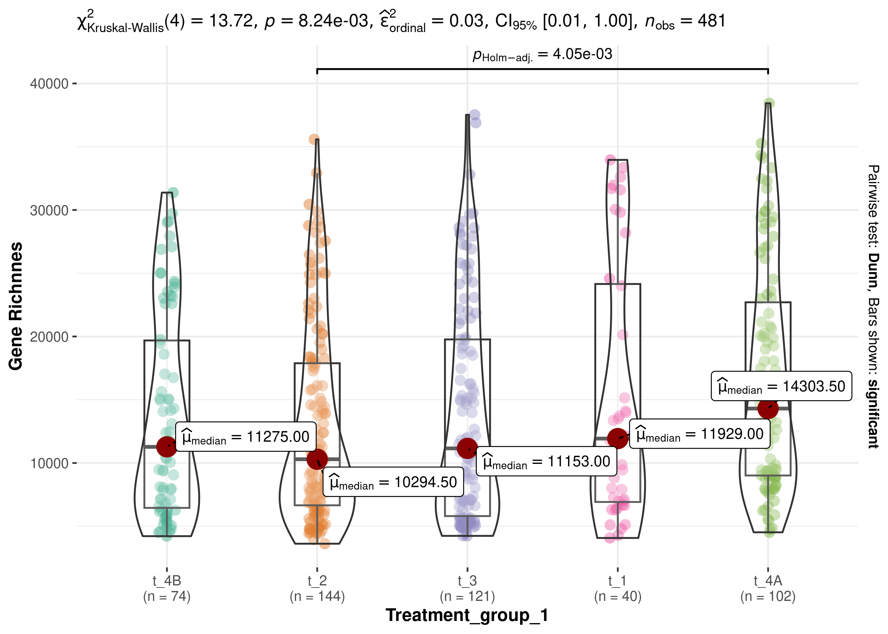
| Version | Author | Date |
|---|---|---|
| e36d2e8 | OriolGEM | 2024-06-03 |
#>
#>
#> ### ` pass_reads_quantile `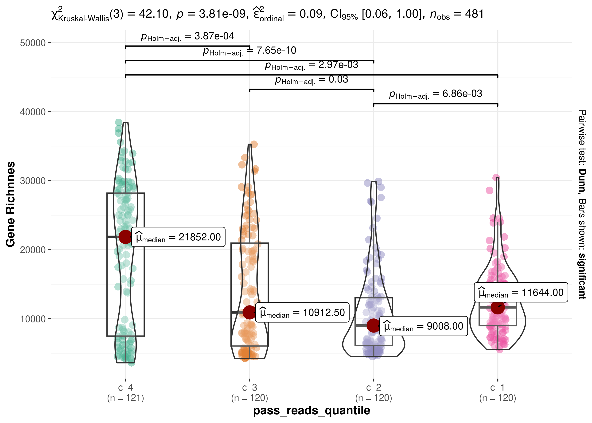
| Version | Author | Date |
|---|---|---|
| e36d2e8 | OriolGEM | 2024-06-03 |
#>
#>
#> ### ` vaginotype `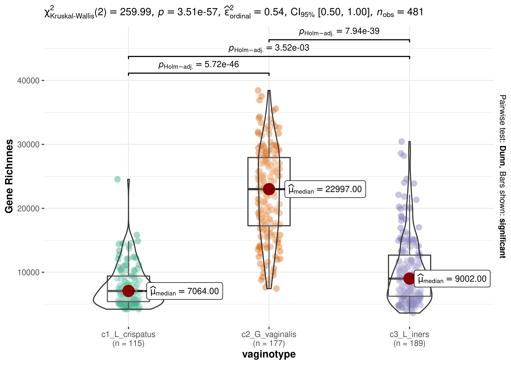
| Version | Author | Date |
|---|---|---|
| e36d2e8 | OriolGEM | 2024-06-03 |
#>
#>
#> ### ` vaginotype_condition `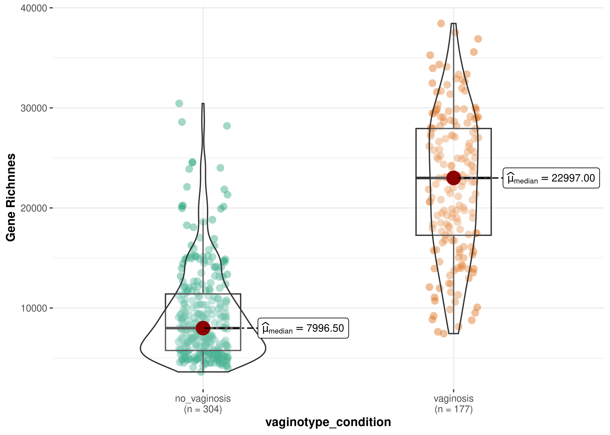
| Version | Author | Date |
|---|---|---|
| e36d2e8 | OriolGEM | 2024-06-03 |
After representing the gene richness for each level of each categorical variable, we observed that there are also significant differences within the categorical variables vaginotype. We noticed that Cluster 2 (dominated by G. Vaginalis and potentially associated with vaginosis) exhibits higher gene diversity compared to the other two clusters. Furthermore, it is worth mentioning that the other two clusters also display variations in gene diversity among themselves.
To further explore the aforementioned observations, we will verify whether gene diversity varies across timepoints for the categorical variables.
metar::get_cat(mre) %>%
dplyr::pull(1) %>%
.[-1] %>% # Remove "Treatment_group"
purrr::walk(~ {
cat('\n\n### `', .x, '`\n\n')
metar::get_diversity(mre, type = "virgo", res_slot = "rarefaction") %>%
purrr::pluck("longitudinal_rel", "categorical", .x) %>%
plot()
})In these graphs, we can see the changes in the relative gene richness over time of samples separated by categorical variable groups. It seems that the cluster dominated by L. Iners has a less stable microbiome over time.
In order to visualize how the newly generated categorical variables cluster, we will once again represent the Heatmap for the 50 most abundant bacterial species.
## run heatmap
mre <- metar::virgo_heatmap(mre, top_n = 50, save_files = FALSE)
## plot heatmap
mre %>%
metar::get_taxa("virgo", "heatmaps") %>%
purrr::pluck("ta1", "top_50") %>%
ComplexHeatmap::draw(heatmap_legend_side = "left", annotation_legend_side = "bottom")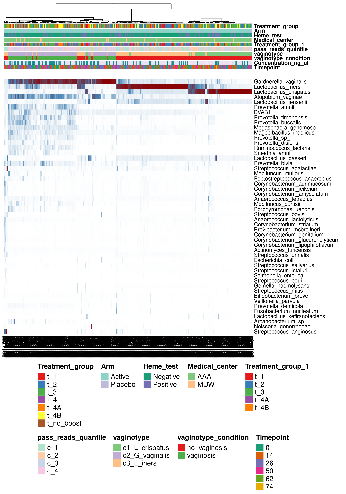
| Version | Author | Date |
|---|---|---|
| e36d2e8 | OriolGEM | 2024-06-03 |
In this heatmap with hierarchical clustering, we can clearly see that the three bacterial groups correspond to the defined clusters. Moreover, we can clearly see the association between the variables vaginotype and vaginotype_condition and species composition.
NMDS (Non-metric Multidimensional Scaling) analysis is a commonly used non-metric ordination technique that helps visualize the similarity or dissimilarity between samples based on a distance or similarity matrix. In the context of microbiome data, this technique is particularly useful for identifying patterns and significant changes in microbiome composition among different samples or groups.
mre <- metar::virgo_nmds(mre, top_n = 50, save_files = FALSE)
metar::get_taxa(mre, "virgo", "nmds") %>%
purrr::pluck("ta1", "top_50", "all_adonis") %>%
dplyr::arrange(Pr..F.)#> # A tibble: 10 × 6
#> id Df SumOfSqs R2 F Pr..F.
#> <chr> <dbl> <dbl> <dbl> <dbl> <dbl>
#> 1 Treatment_group 6 4.65 0.0268 2.18 0.001
#> 2 Treatment_group_1 4 4.17 0.0240 2.93 0.001
#> 3 pass_reads_quantile 3 33.9 0.195 38.6 0.001
#> 4 vaginotype 2 78.3 0.452 197. 0.001
#> 5 vaginotype_condition 1 46.3 0.267 175. 0.001
#> 6 cluster 2 78.3 0.452 197. 0.001
#> 7 Heme_test 1 1.16 0.00668 3.22 0.005
#> 8 Medical_center 1 0.718 0.00414 1.99 0.065
#> 9 Arm 1 0.524 0.00302 1.45 0.186
#> 10 Timepoint 5 1.23 0.00711 0.681 0.916The Adonis test indicates that there are significant differences in the taxonomic composition between the groups of the categorical variables: Treatment_group_1, pass_reads_quantile, vaginotype, and vaginotype_condition.
metar::get_cat(mre) %>%
dplyr::pull(1) %>%
.[-1] %>% # Remove "Treatment_group"
purrr::walk( ~ {
cat('\n\n### `', .x, '`\n\n')
metar::get_taxa(mre, "virgo", "nmds") %>%
purrr::pluck("ta1", "top_50", "categorical", .x) %>%
plot()
})The nmds plots also indicate that there are significant differences between the levels of the categorical variables: pass_reads_quantile, vaginotype, and vaginotype_condition. Moreover, the species contributing to cluster differentiation can be seen. While G. Vaginalis and A. Vaginae contribute to the formation of cluster 2 (and to the appearance of vaginosis), L. Crispatus and L. Iners contribute to their respective clusters.
At this point, it is clear that the categorical variable “vaginotype” is a significant component of the observed compositional variability. To further investigate this phenotypic characteristic, we ask the question of whether the vaginotype remains stable longitudinally within the same patient.
First, we generated alluvial plots for each categorical variable.
library(ggalluvial)
metar::get_cat(mre) %>%
dplyr::pull(1) %>%
.[-1] %>% # Remove "Treatment_group"
purrr::walk(~ {
cat('\n\n### `', .x, '`\n\n')
p <-
metar::get_meta(mre) %>%
dplyr::select(PatientID, !!dplyr::sym(.x), Timepoint) %>%
ggplot(
aes(
as.factor(Timepoint),
stratum = !!dplyr::sym(.x),
alluvium = PatientID,
fill = !!dplyr::sym(.x),
label = !!dplyr::sym(.x)
)
) +
scale_x_discrete(expand = c(.1, 0)) +
geom_flow(width = 1 / 4) +
geom_stratum(alpha = .5, width = 1 / 4) +
geom_text(stat = "stratum", size = 4) +
theme_minimal() +
theme(legend.position = "none")
plot(p)
})We can observe that the vaginotype variable does not remain stable over time. Some patients start with a potential vaginosis phenotype and then transition to a healthy phenotype, while others transition from a healthy phenotype to vaginosis. Additionally, some patients go through both stages cyclically.
sessionInfo()#> R version 4.1.2 (2021-11-01)
#> Platform: x86_64-pc-linux-gnu (64-bit)
#> Running under: Ubuntu 22.04.4 LTS
#>
#> Matrix products: default
#> BLAS: /usr/lib/x86_64-linux-gnu/openblas-pthread/libblas.so.3
#> LAPACK: /usr/lib/x86_64-linux-gnu/openblas-pthread/libopenblasp-r0.3.20.so
#>
#> locale:
#> [1] LC_CTYPE=en_US.UTF-8 LC_NUMERIC=C
#> [3] LC_TIME=es_ES.UTF-8 LC_COLLATE=en_US.UTF-8
#> [5] LC_MONETARY=es_ES.UTF-8 LC_MESSAGES=en_US.UTF-8
#> [7] LC_PAPER=es_ES.UTF-8 LC_NAME=C
#> [9] LC_ADDRESS=C LC_TELEPHONE=C
#> [11] LC_MEASUREMENT=es_ES.UTF-8 LC_IDENTIFICATION=C
#>
#> attached base packages:
#> [1] stats graphics grDevices utils datasets methods base
#>
#> other attached packages:
#> [1] ggalluvial_0.12.5 ggplot2_3.5.1 magrittr_2.0.3
#>
#> loaded via a namespace (and not attached):
#> [1] utf8_1.2.4 tidyselect_1.2.1 htmlwidgets_1.6.4
#> [4] grid_4.1.2 gmp_0.7-4 aws.signature_0.6.0
#> [7] munsell_0.5.1 codetools_0.2-20 effectsize_0.8.8
#> [10] withr_3.0.0 colorspace_2.1-0 Biobase_2.54.0
#> [13] phyloseq_1.38.0 logger_0.3.0 highr_0.10
#> [16] knitr_1.46 rstudioapi_0.16.0 stats4_4.1.2
#> [19] ggsignif_0.6.4 ggside_0.3.1 labeling_0.4.3
#> [22] git2r_0.33.0 GenomeInfoDbData_1.2.7 polyclip_1.10-6
#> [25] bit64_4.0.5 farver_2.1.2 datawizard_0.10.0
#> [28] rhdf5_2.38.1 rprojroot_2.0.4 vctrs_0.6.5
#> [31] generics_0.1.3 xfun_0.44 timechange_0.3.0
#> [34] BWStest_0.2.3 R6_2.5.1 doParallel_1.0.17
#> [37] GenomeInfoDb_1.30.1 clue_0.3-65 bitops_1.0-7
#> [40] rhdf5filters_1.6.0 cachem_1.1.0 promises_1.3.0
#> [43] scales_1.3.0 vroom_1.6.5 nnet_7.3-19
#> [46] gtable_0.3.5 multcompView_0.1-10 workflowr_1.7.1
#> [49] rlang_1.1.3 zeallot_0.1.0 GlobalOptions_0.1.2
#> [52] PMCMRplus_1.9.10 splines_4.1.2 rstatix_0.7.2
#> [55] lazyeval_0.2.2 broom_1.0.6 prismatic_1.1.2
#> [58] checkmate_2.3.1 yaml_2.3.8 reshape2_1.4.4
#> [61] abind_1.4-5 backports_1.5.0 httpuv_1.6.15
#> [64] Hmisc_5.1-2 ggmosaic_0.3.3 tools_4.1.2
#> [67] gplots_3.1.3.1 jquerylib_0.1.4 biomformat_1.22.0
#> [70] RColorBrewer_1.1-3 BiocGenerics_0.40.0 Rcpp_1.0.12
#> [73] plyr_1.8.9 base64enc_0.1-3 zlibbioc_1.40.0
#> [76] purrr_1.0.2 RCurl_1.98-1.14 ggpubr_0.6.0
#> [79] rpart_4.1.23 GetoptLong_1.0.5 correlation_0.8.4
#> [82] S4Vectors_0.32.4 ggrepel_0.9.5 cluster_2.1.6
#> [85] fs_1.6.4 here_1.0.1 magick_2.8.3
#> [88] data.table_1.15.4 circlize_0.4.16 mvtnorm_1.2-5
#> [91] whisker_0.4.1 matrixStats_1.3.0 hms_1.1.3
#> [94] patchwork_1.2.0 evaluate_0.23 IRanges_2.28.0
#> [97] gridExtra_2.3 shape_1.4.6.1 compiler_4.1.2
#> [100] tibble_3.2.1 KernSmooth_2.23-24 ggstatsplot_0.12.3
#> [103] crayon_1.5.2 htmltools_0.5.8.1 mgcv_1.9-1
#> [106] later_1.3.2 tzdb_0.4.0 Formula_1.2-5
#> [109] tidyr_1.3.1 lubridate_1.9.3 aws.s3_0.3.21
#> [112] SuppDists_1.1-9.7 kSamples_1.2-10 tweenr_2.0.3
#> [115] ComplexHeatmap_2.18.0 MASS_7.3-60.0.1 boot_1.3-30
#> [118] readr_2.1.5 Matrix_1.3-4 ade4_1.7-22
#> [121] car_3.1-2 wesanderson_0.3.7 permute_0.9-7
#> [124] cli_3.6.2 parallel_4.1.2 insight_0.19.11
#> [127] igraph_2.0.3 forcats_1.0.0 pkgconfig_2.0.3
#> [130] metar_0.1.5 statsExpressions_1.5.4 foreign_0.8-86
#> [133] plotly_4.10.4 xml2_1.3.6 paletteer_1.6.0
#> [136] foreach_1.5.2 bslib_0.7.0 multtest_2.50.0
#> [139] XVector_0.34.0 snakecase_0.11.1 stringr_1.5.1
#> [142] digest_0.6.35 parameters_0.21.7 janitor_2.2.0
#> [145] vegan_2.6-6.1 Biostrings_2.62.0 rmarkdown_2.27
#> [148] htmlTable_2.4.2 curl_5.2.1 gtools_3.9.5
#> [151] rjson_0.2.21 lifecycle_1.0.4 nlme_3.1-164
#> [154] jsonlite_1.8.8 Rhdf5lib_1.16.0 carData_3.0-5
#> [157] viridisLite_0.4.2 fansi_1.0.6 pillar_1.9.0
#> [160] lattice_0.22-6 fastmap_1.2.0 httr_1.4.7
#> [163] survival_3.6-4 glue_1.7.0 bayestestR_0.13.2
#> [166] png_0.1-8 iterators_1.0.14 bit_4.0.5
#> [169] ggforce_0.4.2 stringi_1.8.4 sass_0.4.9
#> [172] performance_0.11.0 rematch2_2.1.2 caTools_1.18.2
#> [175] memoise_2.0.1 Rmpfr_0.9-5 dplyr_1.1.4
#> [178] ape_5.8